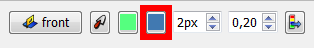

La couleur et l'épaisseur de la ligne (et tous les autres objet de la vue) peut être facilement modifiée dans l'atelier Draft

Sur la Barre de commandes, une barre d'outils affiche une série de boutons, dont trois pour les lignes: 
 Donne une couleur aux lignes (bord).
Donne une couleur aux lignes (bord).
 Donne une couleurs aux faces de la forme.
 Donne l'épaisseur de la ligne (bord).
Donne l'épaisseur de la ligne (bord).
 Donne tous les paramètres affichés aux objets nouvellement créés style objets sélectionnés selected.
Donne tous les paramètres affichés aux objets nouvellement créés style objets sélectionnés selected.
{kind=link}
Sur la Barre de commandes Draft, vous verrez trois boutons: un réglage de l'épaisseur de ligne, un bouton pour la couleur de fond et un bouton "Appliquer". Si des objets sont sélectionnés lorsque vous modifiez ces valeurs, ils recevront automatiquement les nouvelles valeurs. Si aucun objet n'est sélectionné, les modifications que vous apportez s'appliqueront aux objets que vous créerez plus tard. À tout moment, vous pouvez appuyer sur le bouton "Appliquer" pour appliquer les paramètres actuels aux objets sélectionnés. Vous pouvez également le faire à partir du menu contextuel de l'arborescence. Si un groupe est sélectionné, les paramètres seront appliqués à tous les objets du groupe.
Si vous souhaitez modifier la couleur d'une face des objets rempli, vous pouvez le faire via la fenêtre des propriétés.
Voir aussi Draft Apply  .
.